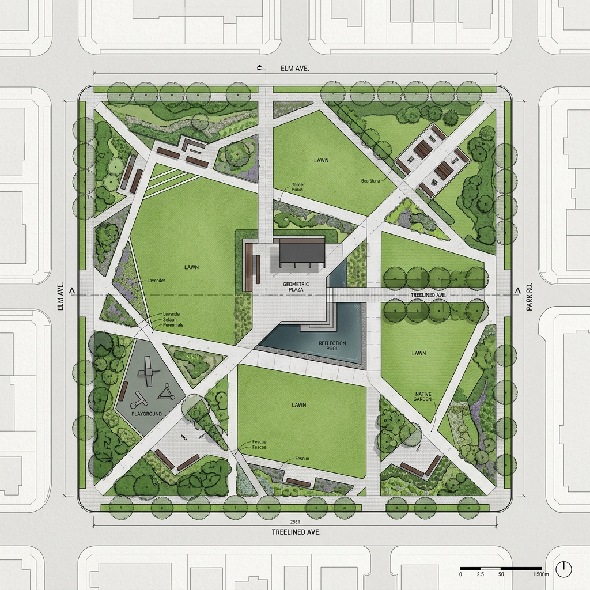
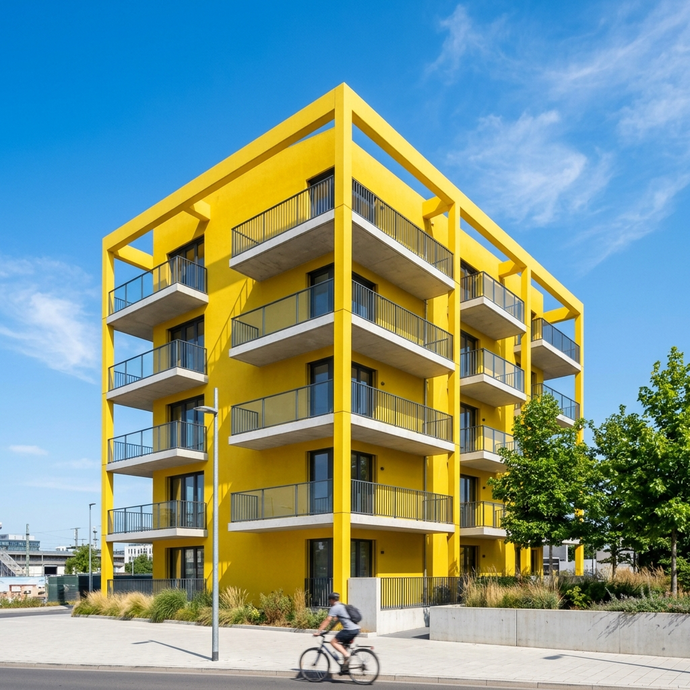
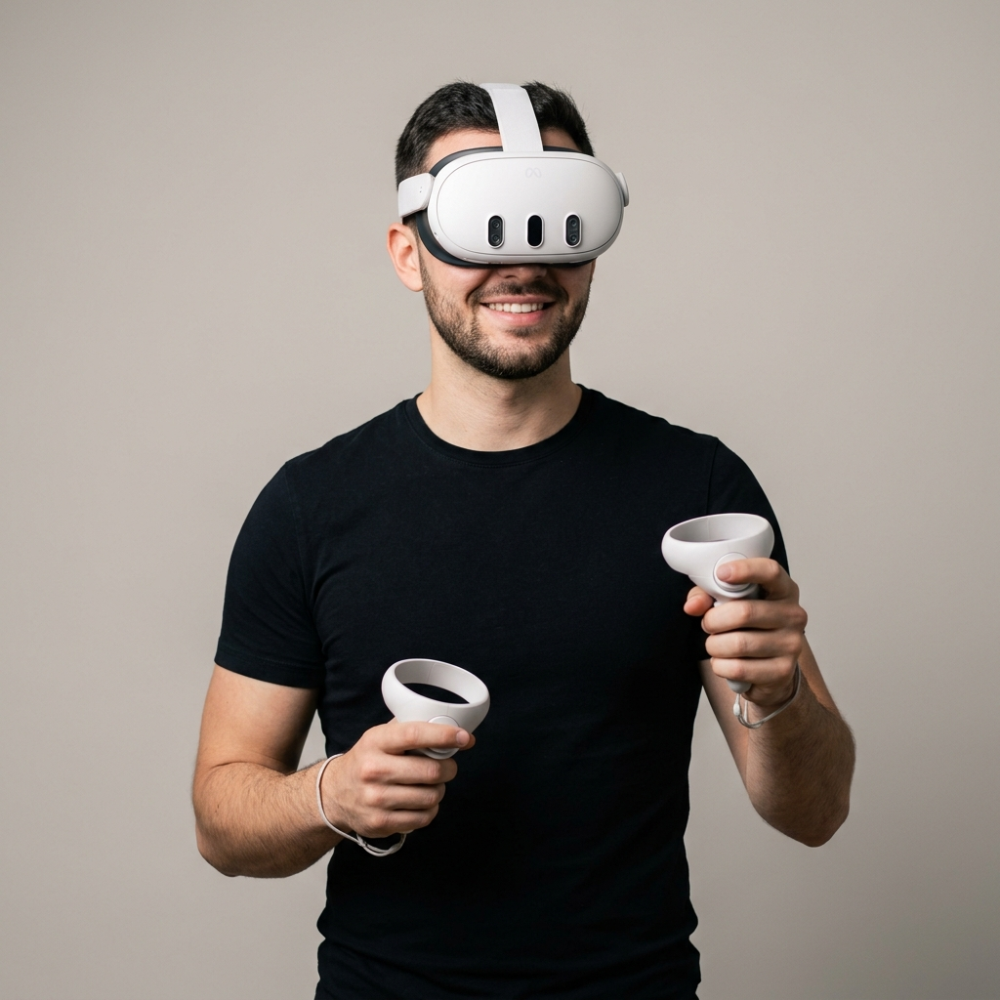

We create sustainable architectural frameworks designed to balance human needs with ecological boundaries, resolving complex urban planning challenges.
Learn more
Our visualizations translate raw blueprint designs into photorealistic spaces, capturing light, texture, and geometry in precise detail.
Learn more
Immerse clients into spatial configurations using real-time VR headsets and active controllers, letting them walk through their future space today.
Learn more